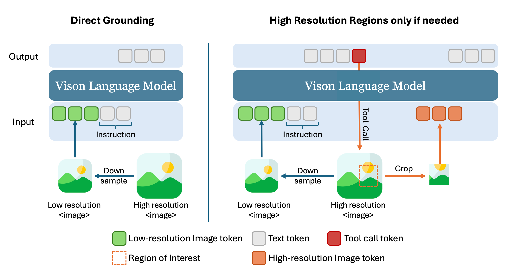
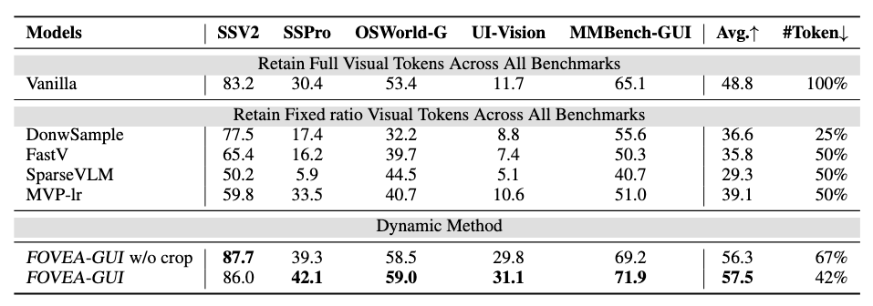
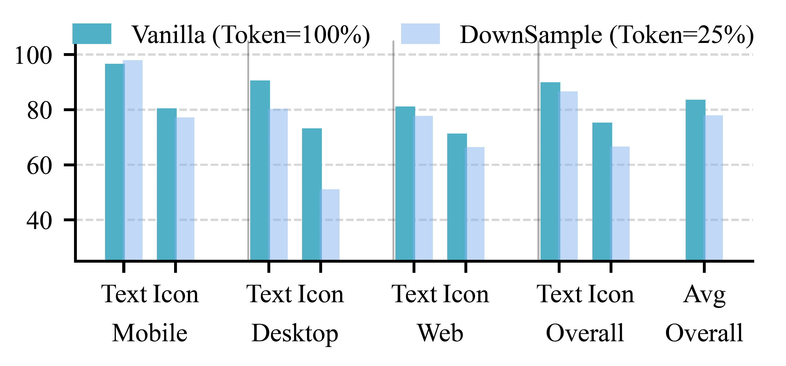
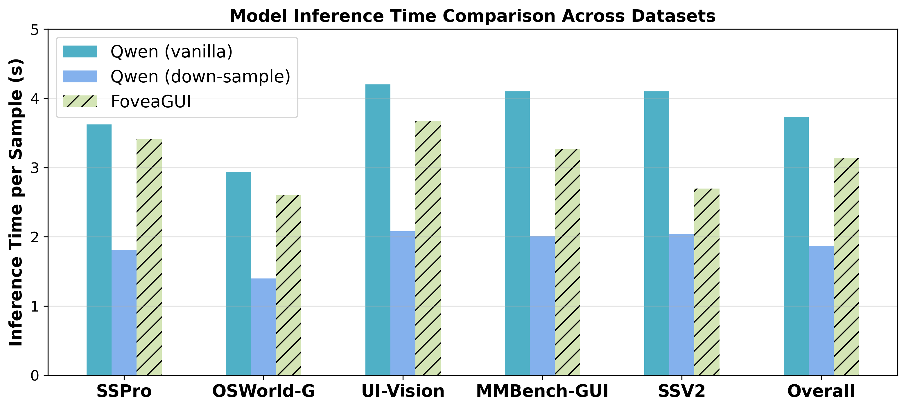
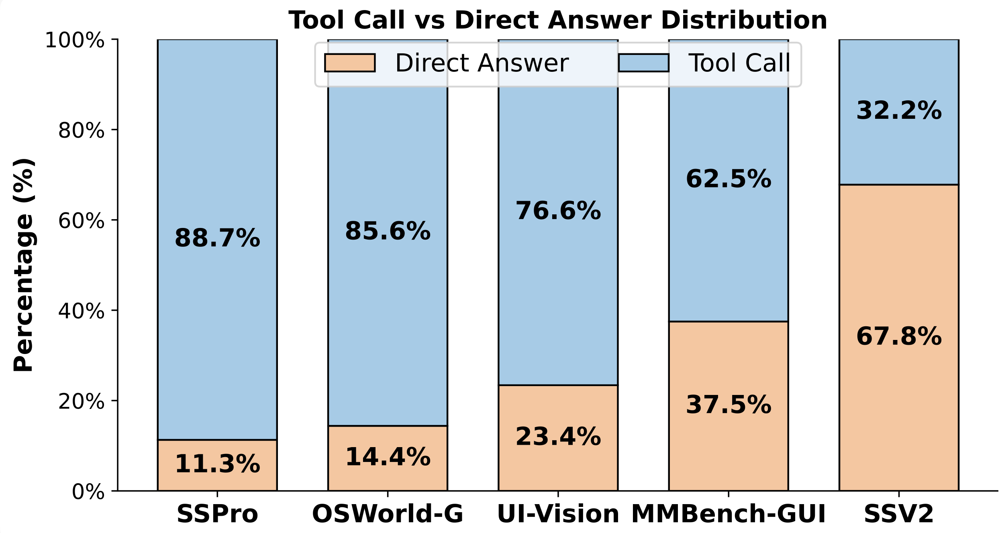
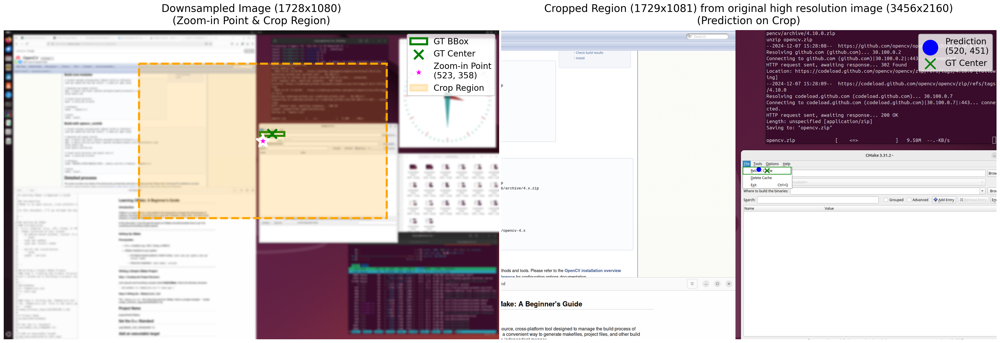
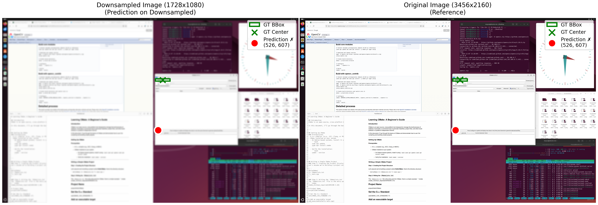

Under Review at ACM MM 2026
Graphical User Interface (GUI) grounding requires precise identification of interface elements from high-resolution screenshots, but this imposes heavy visual token costs on large vision–language models. We propose FOVEA-GUI, a dynamic high-resolution allocation framework that selectively acquires fine-grained evidence only when necessary. The agent first reasons over a low-resolution global view, invoking a zoom-in tool for localized high-resolution crops when more detail is required. Trained with reinforcement learning and a balanced reward design, FOVEA-GUI learns adaptive visual evidence acquisition, achieving strong grounding accuracy while reducing visual token costs by over 50%. Experiments on multiple GUI benchmarks (ScreenSpot-V2, OSWorld-G, UI-Vision, and MMBench-GUI) demonstrate state-of-the-art efficiency–accuracy trade-offs for grounding tasks.
FOVEA-GUI imitates the human eye’s selective focus mechanism for visual grounding. The system first analyzes a low-resolution global view and decides whether to invoke the zoom-in tool to acquire high-resolution evidence.
It is trained under a reinforcement learning framework comprising:
Training includes two stages: pretraining for tool recognition, followed by RL fine-tuning for adaptive policy learning. A curated dataset from GroundCUA and GTA‑1 ensures balanced exposure to both tool-free and tool-required GUI cases.

We evaluate FOVEA‑GUI on five diverse GUI grounding benchmarks — ScreenSpot‑v2, ScreenSpot‑Pro, OSWorld‑G, UI‑Vision, and MMBench‑GUI. These datasets cover dense layouts, icon ambiguities, and small‑text challenges.
FOVEA‑GUI achieves the best accuracy–efficiency trade‑off, outperforming all static compression baselines (FastV, SparseVLM, MVP) while using up to 53% fewer visual tokens. The learned high‑resolution policy dynamically switches between global perception and selective zoom‑in reasoning, adapting resolution cost to task complexity.
On the professional‑grade ScreenSpot‑Pro (4K) benchmark, FOVEA‑GUI attains the highest accuracy using only 47% token budget, demonstrating that targeted zoom‑in crops outperform full‑image high‑resolution processing. In UI‑Vision — which involves 83 apps and multi‑domain layouts — FOVEA‑GUI consistently surpasses baselines across both dense and spatial instructions.
Despite its dynamic dual‑phase logic, FOVEA‑GUI reduces end‑to‑end inference latency compared with vanilla full‑resolution models, proving that adaptive evidence acquisition leads to faster, more efficient GUI reasoning.



We further examine how FOVEA‑GUI dynamically leverages its zoom‑in tool across GUI grounding scenarios to balance visual precision and efficiency.
Tool‑Use Adaptivity. As shown below, FOVEA‑GUI invokes the zoom‑in tool more frequently on high‑resolution, fine‑grained benchmarks such as ScreenSpot‑Pro and OSWorld‑G, where the model needs to interpret tiny widgets, icons, and dense text. On comparatively coarse layouts such as ScreenSpot‑V2, it often answers directly, indicating effective adaptive control over high‑resolution acquisition.

Toolflow Ablation.
We analyze the influence of crop region size in the zoom‑in pipeline on the ScreenSpot‑Pro benchmark.
A moderate region size (1/4 of the original area) achieves the best accuracy, while smaller crops (1/16)
remove important context, causing the model to fallback to direct answering with degraded performance.
| Methods | ScreenSpot‑Pro | Δ |
|---|---|---|
| FOVEA‑GUI (crop region 1/4) | 39.3 | — |
| FOVEA‑GUI w/o crop (full‑res) | 36.5 | −2.8 |
| FOVEA‑GUI (crop region 1/16) | 32.1 | −7.2 |
Case Study. The qualitative analysis below demonstrates how FOVEA‑GUI intelligently decides when to zoom for better grounding. In (b), the down‑sampled model fails due to missing fine‑grained details. In contrast, (a) shows FOVEA‑GUI proactively invoking the tool to crop the correct sub‑region, recovering essential context and producing the right answer.


Overall, these findings confirm that FOVEA‑GUI learns dynamic, foresight‑based resolution control — minimizing tool usage when global observation suffices, and invoking the zoom‑in tool for detailed visual reasoning when necessary.